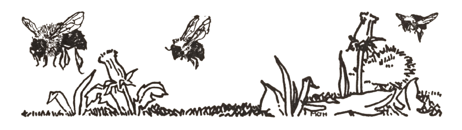

For the Love of Bees
I've been learning about beekeeping since 2019 when I picked up my first book on a whim at the library, and I've been so in love with them ever since. They are such a delight to watch work, and they fill my heart with such joy to know all of the incredible things they can do to take care of themselves. I'm not at a place in my life where I can actually keep bees, but I am taking the time to learn as much as I can so that I can someday care for hives of my own.
Bee-sources
I always recommend looking for local resources as bee seasons and behavior and even beekeeping techniques are super dependent on your local ecosystems, but here're some of the things that I've used on my bee journey. Anything marked with and asterisk was also recommended by my local beekeeper association.- Various Links from WSU provided for Apprentice/Master Beekeeper Certification Classes (2008 – 2020)
- Beekeeping 101 by Penn State Extension (They offered this for free during the first year of the pandemic, but at this price, look for a 101 class through your local beekeeper org! The same information in addition to regional beekeeper info was only like $35.)
Books About Bees & Beekeeping
- The Backyard Beekeeper by Kim Flottum* (This was the first beekeeping book I ever read!)
Books I Haven't Read Yet
- The Beekeeper's Handbook by Diana Sammataro & Alphonse Avitabile* (This link is for the fourth edition, but check your local library for the fifth edition if you can!)
- Honeybee Democracy by Thomas D. Seeley*
- Following the Bee Line by Josephine Morse
- The Rooftop Beekeeper by Megan Paska
- Mysteries of Beekeeping Explained by M. Quinby
- Quinby's New Beekeeping by M. Quinby
Credits
Background by Killian Ng
Illustrations by Hugh Spencer (from Elementary Science Readers First Book and Second Book) and Marie O'Hara (from Following the Bee Line)
Bee on the pink flower is from Betty's Graphics
